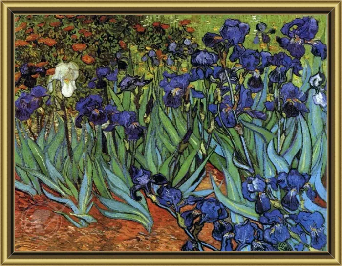

Year: 1889
Medium: Oil on canvas
Art Movement: Post-Impressionism
Size: 71 × 93 cm
Location: J. Paul Getty Museum, Los Angeles, USA
Irises is a famous painting by the Dutch artist Vincent van Gogh. He created this artwork in 1889, during his stay at the Saint-Paul-de-Mausole asylum in Saint-Rémy-de-Provence, France.
The painting shows a beautiful group of blue and purple irises growing in a garden. The flowers are surrounded by long green leaves, while the background contains different shades of yellow, orange and green. The combination of these colors makes the painting look bright and full of life.
Van Gogh was deeply interested in nature, and flowers were among his favorite subjects. Through this painting, he captures the beauty of a simple garden using his own unique artistic style. He used bold colors and expressive brushstrokes to make the flowers look lively and natural.
When we look at the painting, the first thing that catches our attention is the large group of blue and purple flowers. Each flower has a slightly different shape and position, making the garden look natural rather than perfectly arranged.
The long green leaves spread in different directions and fill the lower part of the painting. They create a beautiful contrast with the blue and purple flowers.
Behind the flowers, we can notice a mixture of yellow, green and orange colors. The background is not very detailed, but it adds depth and makes the flowers stand out.
One interesting detail is that a single white iris can be seen among the blue and purple flowers. This small difference makes the composition even more interesting.
Vincent van Gogh painted Irises in 1889, shortly after entering the Saint-Paul-de-Mausole asylum in Saint-Rémy, France.
During this period, Van Gogh was going through serious personal and mental health difficulties. However, he continued to paint and found inspiration in the natural surroundings of the asylum.
The garden became an important subject for him. He painted flowers, trees and other parts of nature because they gave him something meaningful to observe and express through his art.
Irises was one of the first paintings he created during his stay there. He carefully studied the flowers and their shapes before bringing them to life on canvas.
Color is one of the most important features of Irises. Van Gogh uses blue, violet, green, yellow, orange and reddish-brown to create a strong visual effect.
The blue and violet flowers stand out against the warm yellow and orange colors in the background. This contrast makes the irises look even more noticeable.
Van Gogh understood how different colors work together. He often used contrasting colors to make his paintings more attractive and expressive.
Interestingly, research by the Getty Museum has shown that some of the flowers' original colors have changed over time. They were once more violet than they appear today.
One of the most interesting things about Van Gogh's paintings is his use of brushstrokes.
In Irises, we can notice strong and visible brushstrokes throughout the painting. The petals have curved shapes, while the leaves have long and twisting lines.
He did not simply paint flowers as they appeared in real life. He gave them a sense of movement through his brushwork.
The flowers and leaves seem to flow across the canvas, making the entire composition look connected and full of energy.
Van Gogh had a strong interest in Japanese art, especially Japanese woodblock prints.
Japanese artwork often used bold outlines, flat areas of color and carefully arranged compositions. These features influenced several of his paintings.
In Irises, we can notice a similar approach. The flowers fill almost the entire canvas, and the composition does not leave much empty space.
The arrangement of flowers and leaves gives the painting a decorative appearance, which is one of the reasons it is so interesting to look at.
What makes Irises special is the way Van Gogh transforms a simple group of flowers into something full of energy and expression.
The painting does not show any dramatic event or human activity. Its beauty comes from the flowers, colors, shapes and the artist's creative way of looking at nature.
The single white iris among the blue and purple flowers is particularly interesting. It creates a noticeable difference in the composition.
Some people interpret this flower as a possible symbol of loneliness or isolation, although there is no confirmed meaning behind it.
The painting reminds us that even simple things in nature can become beautiful works of art.
Nature played a major role in Vincent van Gogh's artistic life. He often painted flowers, trees, gardens, fields and landscapes.
He believed that nature offered endless opportunities to experiment with colors and painting techniques.
During his stay at Saint-Rémy, he spent considerable time observing the surroundings and creating paintings inspired by nature.
Flowers, especially irises and sunflowers, became important subjects in his work. Through these paintings, Van Gogh expressed his interest in the natural world and his personal artistic vision.
If you look closely at Irises, you will notice that no two flowers look exactly the same.
Van Gogh carefully observed the different shapes and movements of the flowers. Some petals bend outward, while others twist and curl in different directions.
The green leaves also play an important role. Their long, pointed shapes create interesting patterns between the flowers.
Another detail worth noticing is the reddish-brown soil at the bottom of the painting. It creates a strong contrast with the green leaves and purple flowers.
These small details show how carefully Van Gogh studied the garden before painting it.
Vincent van Gogh (1853–1890) was a Dutch painter who became one of the most influential artists in the history of Western art.
He is widely known for his expressive use of colors, bold brushstrokes and emotional approach to painting.
Although he did not receive much recognition during his lifetime, his paintings became extremely famous after his death.
Some of his most well-known artworks include The Starry Night, Sunflowers, The Bedroom, Café Terrace at Night and Irises.
Van Gogh created more than 2,000 artworks during his career, including paintings, drawings and sketches.
He died in 1890, at the age of 37. Today, his artworks are displayed in major museums around the world and continue to inspire artists and art lovers.
Irises is a wonderful example of Vincent van Gogh's ability to find beauty in ordinary things.
Through colorful flowers, expressive brushstrokes and interesting patterns, he transforms a simple garden into a memorable work of art.
The painting also gives us a glimpse into the period when Van Gogh was staying at Saint-Rémy and finding inspiration in the natural surroundings.
What makes this artwork truly special is its energy. Even though it shows only flowers in a garden, it manages to capture our attention through its colors, shapes and artistic expression.
More than a century later, Irises remains one of Van Gogh's most admired flower paintings.
| Quick Facts | Information |
|---|---|
| Artist | Vincent van Gogh |
| Year | 1889 |
| Medium | Oil on canvas |
| Style | Post-Impressionism |
| Subject | Flowers and garden |
| Size | 71 × 93 cm |
| Museum | J. Paul Getty Museum |
| Location | Los Angeles, USA |